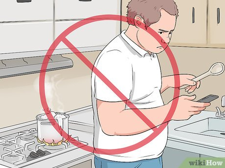
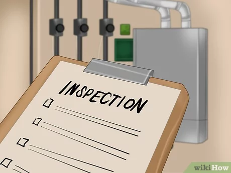
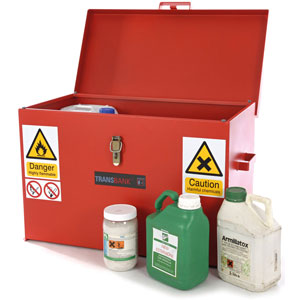
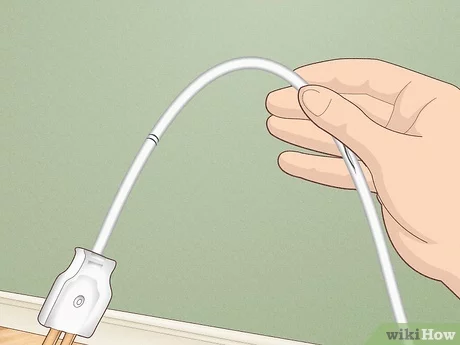
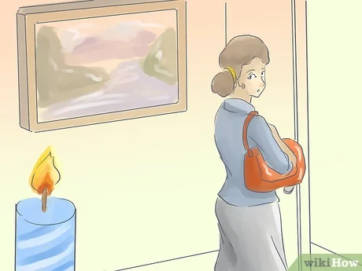
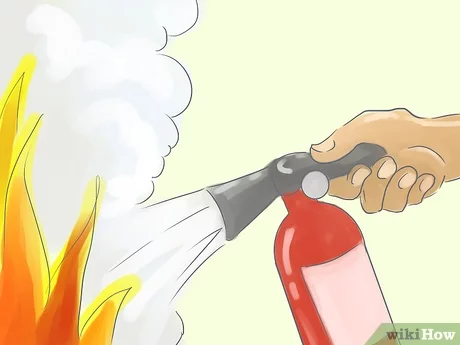

There truly is no place like home. Your home is a place where you build your life and create beautiful memories with your loved ones, which makes the thought of your home catching fire even more terrifying. Why take those chances? Even though you cannot keep everything under control, there are a number of measures that you can take in order to help prevent the possibility of a house fire. Let us begin.
Here are 6 Tips to Prevent Fires from Happening in Your Home.
| How to Prevent Fire | |
|---|---|
|  | 1. Never leave your kitchen unattended whilst cooking.
It only takes a few seconds for a fire to break out. If you need to leave the kitchen for any reason whatsoever, make sure to either ask someone to watch the food for you or turn everything off altogether until you’re back. |
|  | 2. Inspect your heating sources.
House fires may very well be triggered if your home heating sources are not working properly. Be sure to always clean out your air conditioning filters, keep your heaters away from anything that is flammable, and have these things checked out by a professional once a year.. |
|  | 3. Store any flammable products correctly.
Household cleaners and items such as hair spray or shaving cream may be very hazardous if exposed to a strong source of heat. Always store these safely in a cool area away from any heaters. |
|  | 4. Maintain your wires.
Before you plug something into a socket, try to be courteous in ensuring that the wire hasn’t been torn or chewed up (in case you have any pets running around). Damaged wires can be a detrimental fire hazard and need replacing as soon as possible. Also, remember that wires do get hot when in use, so be sure to check your wire placement and avoiding passing them under a carpet or anywhere that could potentially catch fire. |
|  | 5. Be cautious with open flames.
We get it, it’s nice having some candles lit up around the house to create a romantic atmosphere, or perhaps even getting the fireplace going to make your home feel even toastier on a cold winter evening. We aren’t going to tell you to avoid candles and fireplaces altogether, however we do encourage you to practice with caution. If you feel yourself dosing off, turn off all your candles beforehand, and if you have pets, keep these open flames out of their reach as much as possible. |
|  | 6. Keep a fire extinguisher or blanket around at all times!
Fire extinguishers and blankets will be your best defence in the event of a fire breaking out. Every family member should know how to use a fire extinguisher, so in case something in your home does catch fire, it can be put out as fast as possible. Fire blankets are also very useful for putting out small fires before they become something larger and fiercer. There is nothing more devastating than losing all your belongings to a house fire. After all, your home is likely to be the source of many beautiful memories, and you owe it to yourself to protect it. |